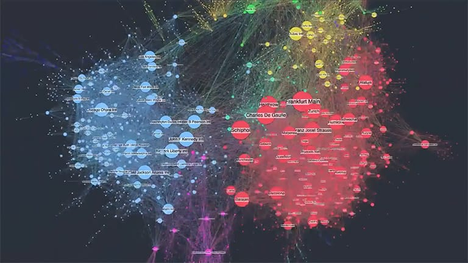

"La excelencia gráfica es aquella que brinda al observador el mayor número de ideas en el menor tiempo, con la menor cantidad de tinta, en el menor espacio."
- Edward Tufte

Network visualization (
https://cambridge-intelligence.com/why-visualize-networks/
)